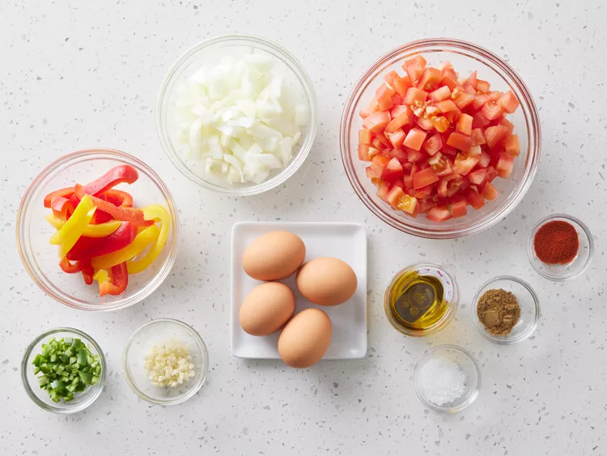
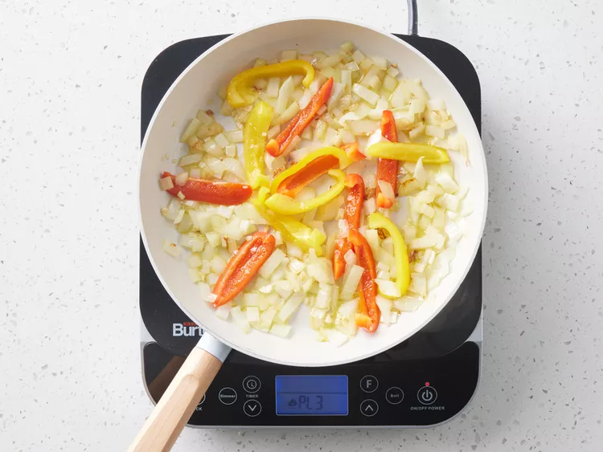
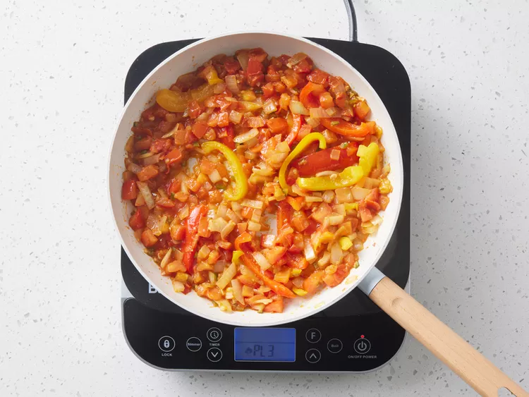
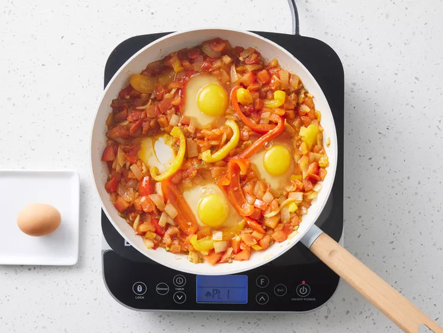

Step 1
Gather all ingredients.
Step 2
Heat olive oil in a skillet over medium heat. Stir in onion, bell pepper, and garlic; cook and stir until vegetables have softened and onion has turned translucent, about 5 minutes.
Step 3
Meanwhile, mix together tomatoes, chile pepper, cumin, paprika, and salt in a bowl.

Step 4
Stir tomato mixture into onion mixture. Simmer, uncovered, until tomato juices have cooked off, about 10 minutes.
Step 5
Make 4 indentations in tomato mixture; crack eggs into indentations. Cover the skillet and cook until eggs are firm but not dry, about 5 minutes.
Step 6
Serve and enjoy!